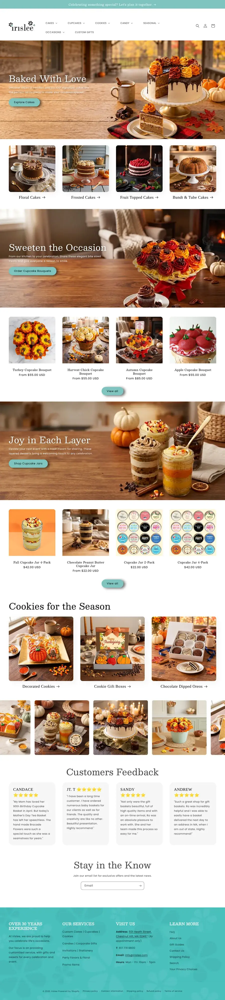
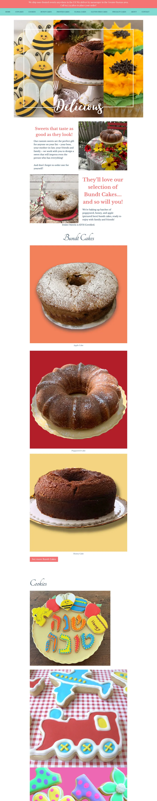
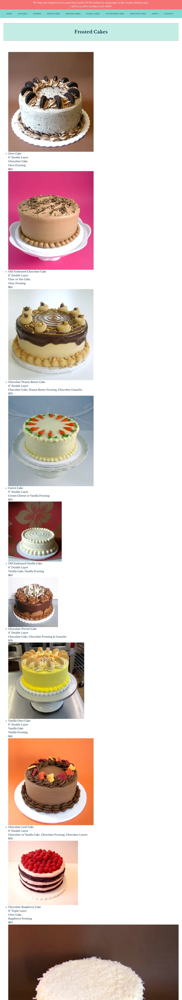
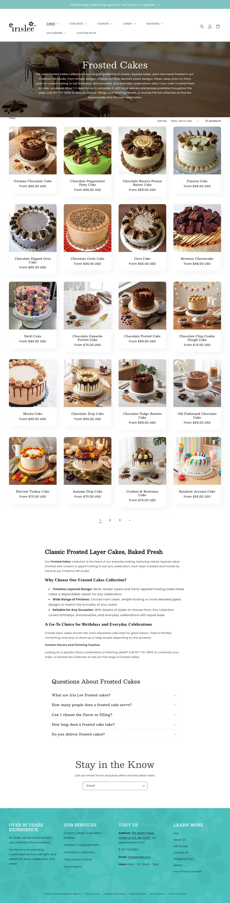
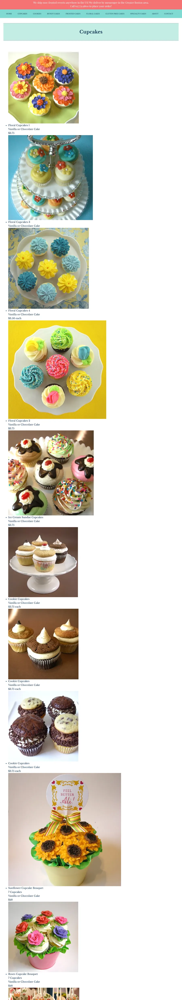
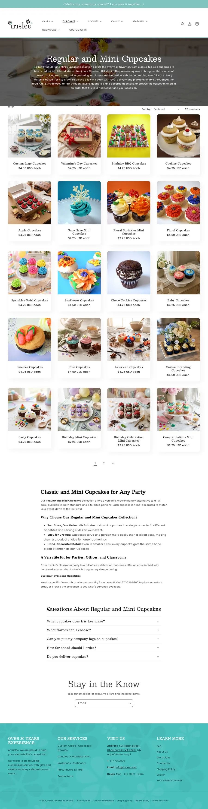
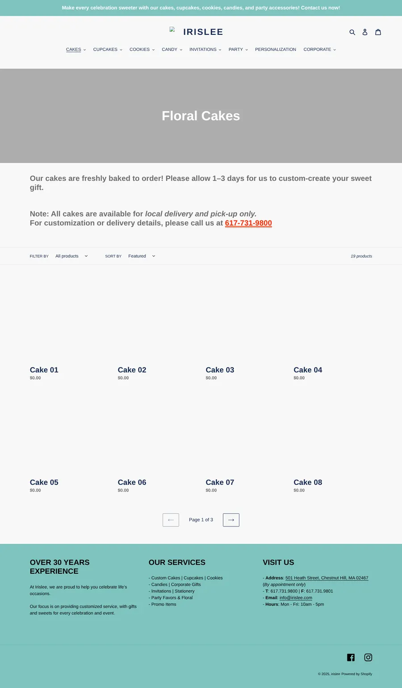
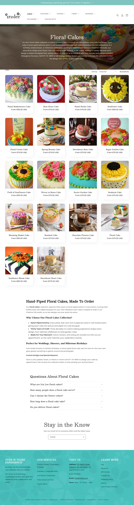
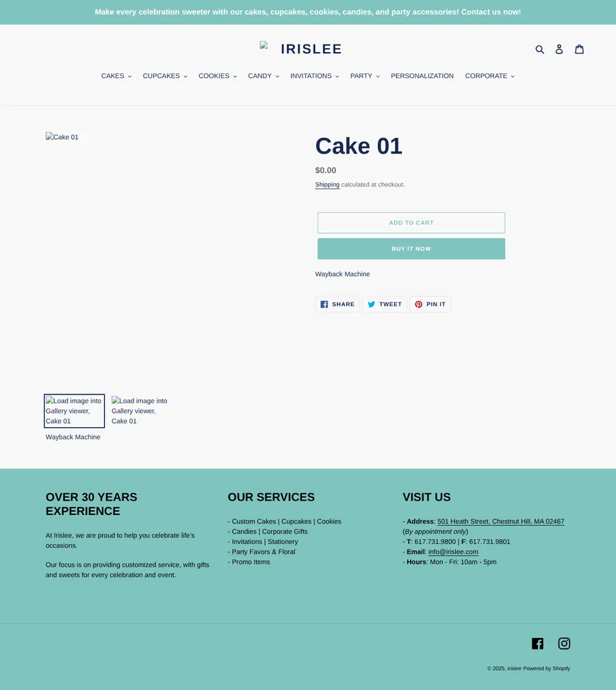
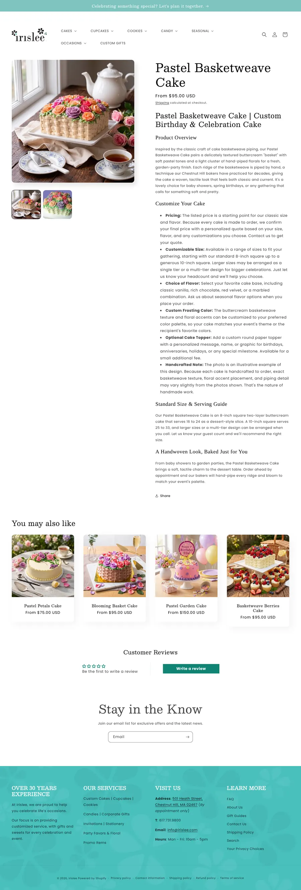

How I Finished a Bakery's Move From WordPress to Shopify
I took over a partly finished migration for Iris Lee, a kosher bakery in Chestnut Hill, MA, and turned two half-working sites into one Shopify store with every listing named, priced and findable.

Finish the move, then make it findable
Iris Lee had a WordPress menu site and a Shopify store that was only partly set up. Customers could land on either one. I took over a partly finished migration and moved everything worth keeping onto Shopify, so there is one store to find, browse and order from.
What changed
Two sites, both half right
The WordPress site at irisleesweets.com was a menu, not a store. Seven menu pages showed 96 photos with prices and a phone number to call. It had no SEO titles or descriptions, the page addresses ran through /index.php/, and a few template pages (a demo recipes page and a test page) were still public.
The Shopify store at irislee.com had the right idea but was mid-move. Cake listings carried placeholder names like Cake 01, showed $0.00 and read as sold out, and that was still the case in May 2026. In June 2026 I took over a partly finished migration. Customers still found the old site too. In October, a corporate customer called from irisleesweets.com because she couldn't find the cupcakes.
Moved, rebuilt and fixed
Mapped the old menu to collections
ContentEvery WordPress menu page now has a Shopify home, split into collections shoppers can filter. I carried photos and items over from the old site.
Finished the half-moved listings
CatalogPlaceholder listings got real names, prices, sizes and descriptions. Every renamed product kept its old address through a redirect, so no saved link breaks. 123 listings were added since June.
Rebuilt the store theme
DesignA new Shopify theme with occasion and seasonal navigation, collection banners and an About and FAQ page, so the store reads like a bakery and not a template.
SEO titles, descriptions and alt text
SearchWritten with Claude to my standards, then checked: 358 of 365 live products and 43 of 45 collections have SEO fields, and every product's main photo has alt text.
Retired the old site
CleanupThe WordPress site is fully backed up to the client's Drive (database, files and email forwarders), and irisleesweets.com has forwarded to irislee.com since October 2026.
Search tracking
NextGoogle Search Console is the next step, so we can see which searches find the store and catch any old address that still needs a redirect.
Old pages, new homes
Before and now









WordPress pages are rebuilt from the site's own backup. October and December 2025 pages are Internet Archive captures, which did not save the product photos.
What it added up to
- 365 live listings, every one priced. None are left at $0.00 or under a placeholder name.
- SEO titles and descriptions on 358 of 365 live products and 43 of 45 collections, plus alt text on every product's main photo.
- 365 redirects keep old product and collection links working after the renames.
- One address. irisleesweets.com now forwards to irislee.com, so customers stop landing on the old menu.
- The bakery line also sells through the owner's Boston Gift Baskets checkout: 18 cakes, cupcakes and cookies for $1,041 from June 1 to November 7, 2026, up from 5 for $293 on the same dates in 2025.
- Store visits on irislee.com since I took over: 443 in June, 474 in July, 948 in August, 743 in September and 411 in October. This is the baseline Search Console data will build on.
If your migration stalled halfway
If you have an old site that still gets traffic and a Shopify store that isn't quite done, I can map what you have, finish the move, keep your old links working and leave you with one store that's ready to sell.
See it live
Where to go from here
Need a site moved to Shopify, or a stalled migration finished?
More case studies


Tell me where your store is stuck
Send a short note about your team, your Shopify store or the repeat work you want help with. You don't need to know which service fits yet. I reply within 24 hours on weekdays.